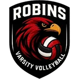

Robins Live team kit
Stream your own matches with a live AVA scoreboard: score on one phone, film on another, and the score, break screens and Kill / Ace / Block animations show up on your YouTube stream. Free, powered by Robins Volleyball Club.
What stays with your team: your rosters, jersey colors, scorer code and scoreboard live in your own copy of the kit, in your team's Google account. Robins VBC never sees them.
1. Make your copy (10 minutes, once)
- Open the Robins Live team kit while signed in to your team's Google account and press Make a copy. The scoreboard service (a small Google Apps Script) comes with it.
- Players tab: one row per player, for your team and the teams you play: team (base name), Men or Women, number, name. Put N under Show name on stream for anyone who wants only their number shown.
- Jersey Colors tab (optional): your kits, so the scoreboard uses your colors.
- Menu Robins Live → 1. Set up. Google asks for permission the first time (the script reads this spreadsheet and keeps your scoreboard); allow it. Your scorer code appears on the Setup tab.
- Extensions → Apps Script → Deploy → New deployment, type Web app, Execute as Me, Who has access Anyone, then Deploy. Copy the web app address (it ends in
/exec) into B6 on the Setup tab. - Menu Robins Live → 2. Show the court links. A scorer link, a camera-phone link and a Tubeist link for each court appear from row 13.
2. At the match
- Scorer phone: open your court's scorer link. Pick the teams under Match setup, then tap a team's panel for each point.
- Android camera phone: install Robins Live (Google Play test link from Robins VBC), then open the camera link, or on the scorer page open More → Camera phone and scan the QR code. The app shows COURT 1 · LINKED when it's following the scorer.
- iPhone camera: Tubeist, with your court's overlay link under Settings → Overlays.
- YouTube: make an RTMP stream key in YouTube Studio for the Android phone (Robins Live) and select that same key on Studio's Stream page, with Auto-start on. YouTube accepts any key without complaint, so if Studio says "No data" while the phone says LIVE, the key picked in Studio is a different one. Tubeist uses an HLS key.
Keeping it safe
- The scorer and camera links contain your scorer code. Send them only to the people scoring and filming. The Tubeist overlay link has no code in it.
- Lost a phone or sent a link to the wrong person? Robins Live → Make a new scorer code, then send the new links.
- Only the two teams in a match are sent to the scorer page, and only to someone with the code.
- Delete last season's players from the Players tab when the season ends.
Privacy · Licenses · Court list · Questions: robinsvbc@gmail.com